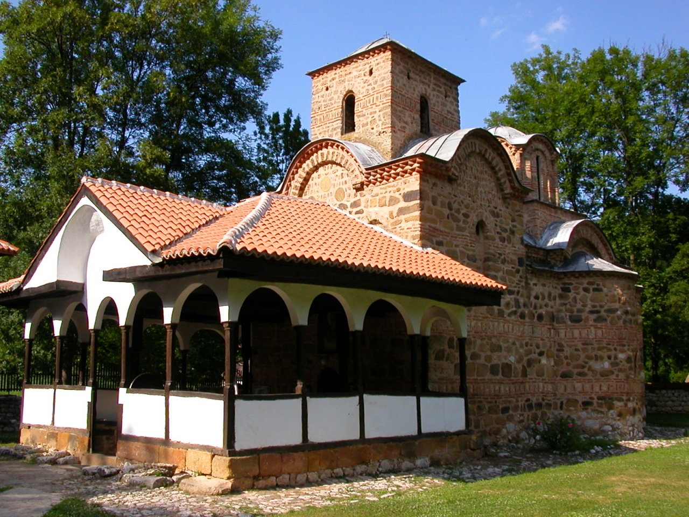

Kratka istorija Pirota
Pirot kroz vekove
Grad je podignut na mestu utvrđenja Turres (3.vek) i utvrđenog vizantijskog gradića Quimedava (4.vek).
U 14. veku spominje se kao Pirot; u 16. i 17. veku bio je lepa i bogata turska varoš. Pirotski grad (14. vek) na Hisaru je dobro očuvan; u kući Hristića (19. vek) je Muzej Ponišavlja, sa kolekcijom narodnih ćilima, po kojima je ovaj kraj veoma poznat.
Crkva Sv. Paraskeva (14. vek) u Staničenju bogata je freskama. Manastir Poganovo, podignut je u poslednjoj deceniji 14. veka. Freske se ubrajaju među najbolja ostvarenja toga doba. Manastir u selu Temska je iz druge polovine 16. veka; freske iz 1567. i 1654. godine; posebno je vredan monumentalni konak iz 18. veka.
